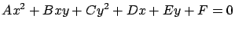

La intersección entre la elipsoide y el plano será una curva que
podrá caracterizarse por una ecuación en dos de las coordenadas (por
ejemplo,  e
e  ), y la tercera coordenada se podrá despejar de
éstas. La ecuación en dos coordenadas será la proyección sobre el
plano definido por ambos ejes de coordenadas (por ejemplo, el plano
), y la tercera coordenada se podrá despejar de
éstas. La ecuación en dos coordenadas será la proyección sobre el
plano definido por ambos ejes de coordenadas (por ejemplo, el plano
 ) de la curva intersección. Será ésta la curva de interés, por
lo que habrá que tener el cuidado de elegir dichas coordenadas de
manera tal que la proyección conserve lo más posible la forma
original de la curva. Es decir, se debe elegir la tercera coordenada
como aquella cuyo eje forme el menor ángulo con la normal al plano;
de esta forma, el plano será lo más paralelo posible al plano de las
otras dos coordenadas. Para el ejemplo estudiado, supondremos que el
eje
) de la curva intersección. Será ésta la curva de interés, por
lo que habrá que tener el cuidado de elegir dichas coordenadas de
manera tal que la proyección conserve lo más posible la forma
original de la curva. Es decir, se debe elegir la tercera coordenada
como aquella cuyo eje forme el menor ángulo con la normal al plano;
de esta forma, el plano será lo más paralelo posible al plano de las
otras dos coordenadas. Para el ejemplo estudiado, supondremos que el
eje  es quien forma el menor ángulo con la normal.
es quien forma el menor ángulo con la normal.
Por lo tanto, despejando de (A.5):
 |
Sustituyendo en (A.1) resulta la ecuación en
 de la cónica resultado de la intersección:
de la cónica resultado de la intersección:
|  |
Como y son ambas mayores que cero, y dado que todos los puntos de la cónica están en la elipsoide y por lo tanto están acotados, la intersección es necesariamente una elipse.
El centro de dicha elipse se puede hallar como la solución del sistema: